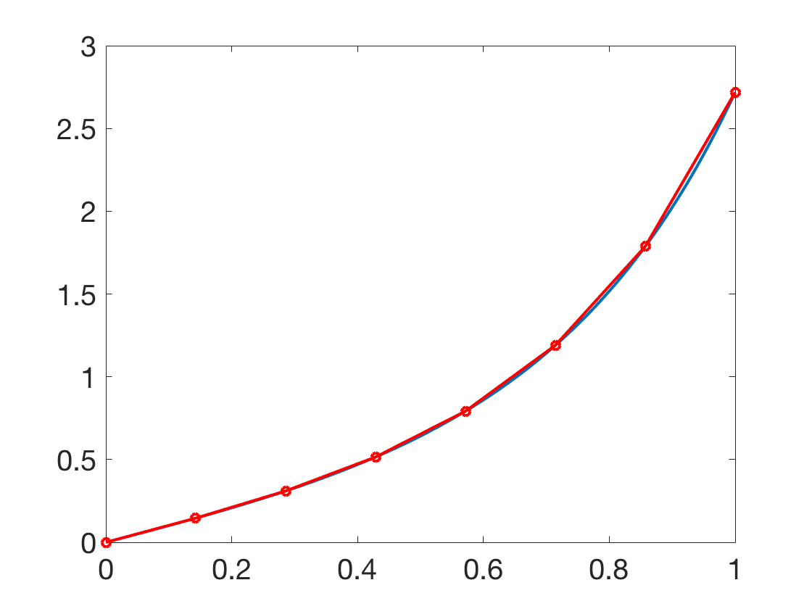
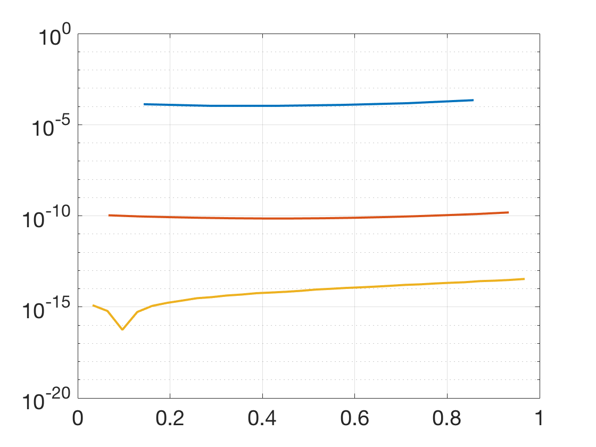
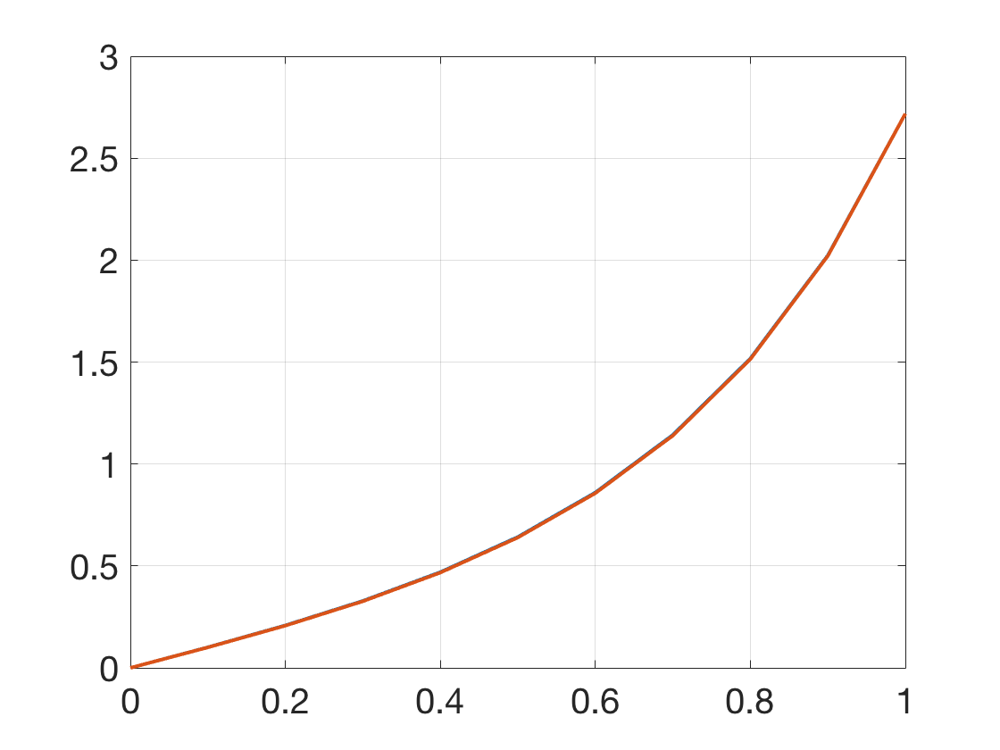
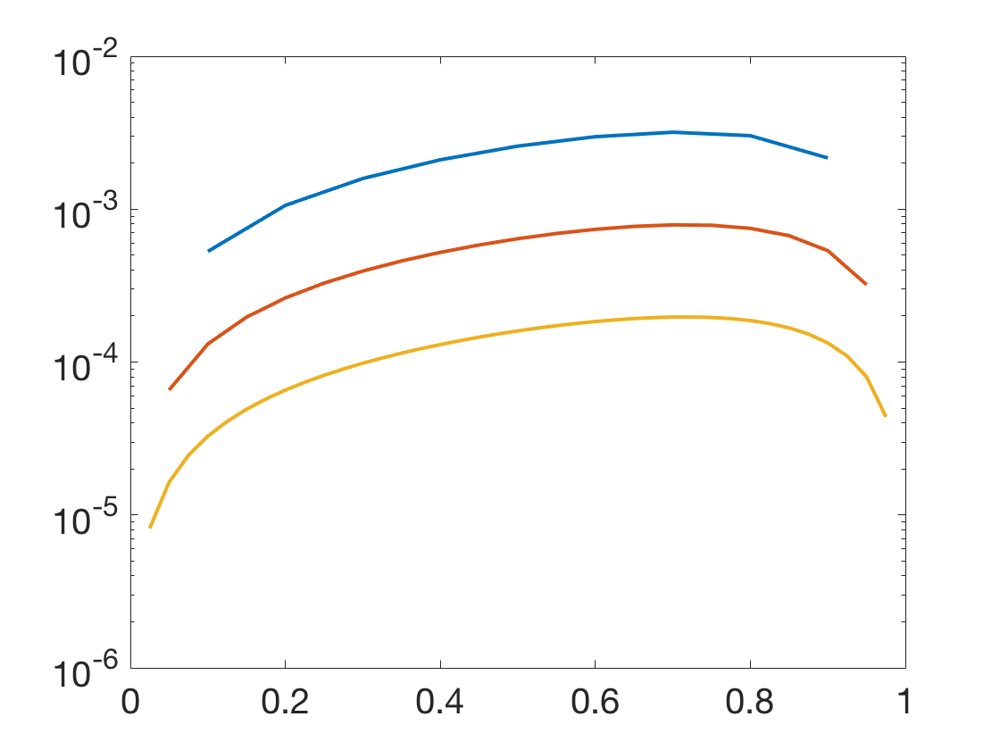

Additional Examples 7.3
1 Use the Collocation Method with \(n=8\) to approximate the solution of the linear BVP
\[ \left\{
\begin{array}{l}
y'' = (4t^2+6)y\\
y(0)=0\\
y(1)=e
\end{array} \right. \]
Plot the approximate solution together with the exact solution \( y = te^{t^2} \).
Display the approximation errors
on the interval in a separate semilog plot for \(n=8, n=16\) and \(n=32\).

The solution has form \(y(t)=\sum_{j=1}^n c_jt^{j-1}.\) The first and last equations for \(c_j\) are the boundary conditions
\begin{eqnarray*}
c_1 &=& y(0) = 0\\
c_1+\ldots+c_n &=& y(1) = e.
\end{eqnarray*}
The other \(n-2\) equations come from (7.19):
\begin{eqnarray*}
\sum_{j=1}^n (j-1)(j-2)c_jt_i^{j-3}-(4t_i^2+6)\sum_{j=1}^n c_jt_i^{j-1} &=& 0\\
\sum_{j=1}^n c_j [(j-1)(j-2)t_i^{j-3}-4t_i^{j+1}-6t_i^{j-1}] &=& 0.
\end{eqnarray*}
Solving the \(n\) equations in \(n\) unknowns yields the coefficients \(c_1,\ldots,c_n\) and the approximate solution for \(n=8\) is plotted below as the red curve, along with the exact solution in blue. In the second figure, the errors for \(n=8\) (blue), \(16\) (red) and \( 32\) (yellow) are shown.


2 Use the Finite Element Method to plot the approximate solution \(y(t)\) of the linear BVP
in Additional Example 1
for \(n=9\). Plot the approximation errors
on the interval in a separate semilog plot for \(n=9, 19\) and \(39\).
For a positive integer \(n\), set the step size
\(h=1/(n+1)\), grid points \(t_i=ih\),
and use the boundary conditions \(c_0=0, c_{n+1}=e\).
The FEM equations (7.22) are:
\begin{eqnarray*}
0&=& \int_0^1\left[\phi_i(t)\left(4t^2+6\right)\sum_{j=0}^{n+1} c_j\phi_j(t)
+\phi_i'(t)\sum_{j=0}^{n+1} c_j\phi_j'(t)\right]\ dt\\
&=&\sum_{j=0}^{n+1} c_j
\left[\int_0^1(4t^2+6)\phi_i(t)\phi_j(t)\ dt+\int_0^1\phi_i'(t)\phi_j'(t)\ dt\right].
\end{eqnarray*}
for \(i=1,\ldots,n\).
The equations for \(i=1, \ldots, n\) reduce to
\begin{eqnarray*}
0 &=& c_{i-1}\left[ 4\int_0^1 t^2\phi_i(t)\phi_{i-1}(t)\ dt + 6\int_0^1 \phi_i(t)\phi_{i-1}(t)\ dt + \int_0^1 \phi'_i(t)\phi'_{i-1}(t)\ dt \right]\\
&+& c_{i}\left[ 4\int_0^1 t^2(\phi_i(t))^2\ dt + 6\int_0^1 (\phi_i(t))^2\ dt + \int_0^1 (\phi'_i(t))^2\ dt \right]\\
&+& c_{i+1}\left[ 4\int_0^1 t^2\phi_i(t)\phi_{i+1}(t)\ dt + 6\int_0^1 \phi_i(t)\phi_{i+1}(t)\ dt + \int_0^1 \phi'_i(t)\phi'_{i+1}(t)\ dt \right],
\end{eqnarray*} or
\( 0=\beta_ic_{i-1}+\alpha_i c_i+\gamma_i c_{i+1}, \)
where \begin{eqnarray*}
\beta_i &=&4h\left(\frac{h^2}{20}+\frac{t_i^2}{6}-\frac{ht_i}{6}\right)+6\left(\frac{h}{6}\right)-\frac{1}{h}\\
\alpha_i &=& 4h\left(\frac{1}{15}h^2+\frac{2}{3}t_i^2\right)+6\left(\frac{2}{3}h\right)+\frac{2}{h}, \\
\gamma_i &=&4h\left(\frac{h^2}{20}+\frac{t_i^2}{6}+\frac{ht_i}{6}\right)+6\left(\frac{h}{6}\right)-\frac{1}{h}.
\end{eqnarray*}
Here we have used the integrals
\begin{eqnarray*}\int_0^1t^2\phi_i(t)\phi_{i+1}(t)\ dt &=& \frac{h^3}{20}+\frac{ht_i^2}{6}
+\frac{h^2t_i}{6}\\
\int_0^1t^2\phi_i(t)\phi_{i-1}(t)\ dt &=& \frac{h^3}{20}+\frac{ht_i^2}{6}
-\frac{h^2t_i}{6}\\
\int_0^1t^2\phi_i(t)^2\ dt &=& \frac{h^3}{15}+\frac{2}{3}ht_i^2\\
\int_0^1\phi_i(t)\phi_{i-1}(t)\ dt =\int_0^1\phi_i(t)\phi_{i+1}(t)\ dt &=& \frac{h}{6}\\
\int_0^1(\phi_i(t))^2\ dt &=&\frac{2}{3}h\\
\int_0^1\phi_i'(t)\phi_{i-1}'(t)\ dt =\int_0^1\phi_i'(t)\phi_{i+1}'(t)\ dt &=& -\frac{1}{h}\\
\int_0^1(\phi_i'(t))^2\ dt &=&\frac{2}{h}
\end{eqnarray*}
for each \(i\). The \(c_j\) satisfy the tridiagonal system
\[\left[ \begin{array}{ccccc}
\alpha_1&\gamma_1&0&\cdots&0\\
\beta_2&\alpha_2&\gamma_2&\ddots&\vdots\\
0&\beta_3&\ddots&\ddots&0\\
\vdots&\ddots&\ddots&\alpha_{n-1}&\gamma_{n-1}\\
0&\cdots&0&\beta_{n}&\alpha_n\\
\end{array}\right]
\left[ \begin{array}{c} c_1\\
c_2\\
\vdots\\
\vdots\\
c_{n-1}\\
c_n\\
\end{array} \right] =
\left[ \begin{array}{c} -y_a\beta_1\\
0\\
\vdots\\\vdots\\
0\\
-y_b\gamma_{n}\\
\end{array} \right]\]
Solving for the values \(c_1,\ldots, c_n\) of the approximate solution
results in the plot below for \(n=9\) and the error plot for \(n=9\) (blue), 19 (red) and 39 (yellow).

